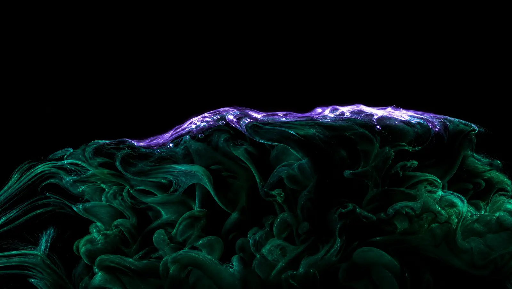

Le rendu s’arrête
Dès qu’une pièce quitte l’écran, elle cesse de calculer. Une machine qui chauffe est une machine qu’on quitte.
Une vitrine n’est pas un exemple de technique. C’est un site complet, pour un métier précis, avec sa propre typographie, ses propres couleurs et son propre monde. Ouvrez-en une et faites-la défiler jusqu’au bout : c’est exactement ce qu’on peut vous livrer.
Ce qui suit n’est pas un site, ce sont les pièces détachées : cinq choses qui répondent à votre geste pendant que vous les regardez. Elles servent à montrer d’où viennent les vitrines.
Le curseur est un râteau à cinq dents. Chaque passage creuse un champ de hauteur gardé en mémoire graphique, et les sillons restent. Ce que vous voyez n’est pas dessiné : c’est un relief, éclairé par une lumière rasante qui transforme un creux de quelques millièmes en ombre franche.
Passez la souris. Rien ne s’efface.
Une simulation de fluide incompressible, résolue soixante fois par seconde : injection, advection, divergence, vingt itérations de pression, puis soustraction du gradient. C’est cette dernière passe qui sépare un vrai fluide d’un flou qui dérive.
Le nom s’écrit à l’encre, puis le courant l’emporte.
On dit à chaque cliente que sa palette sortira de ses propres photos, jamais d’un gabarit. Plutôt que de l’écrire une fois de plus, voilà la chose qui se fait. Déposez n’importe quelle image, une photo de votre salon, de votre logo, d’un mur que vous aimez : ce site entier se repeint dans ses teintes, tout de suite.
En attente d’une image.
L’image ne quitte pas votre navigateur. Aucun envoi, aucun serveur, rien de conservé. Les couleurs sont regroupées en espace Lab, celui qui approche la perception de l’œil, et triées sur leur caractère plutôt que sur leur surface : une palette utile n’est pas faite des couleurs les plus présentes, ce sont les murs beiges.
Tout ne se calcule pas. Une pierre érodée envahie de lianes, aucune formule ne la donne. Alors on la sculpte ailleurs, et on l’amène ici, où elle prend l’éclairage de la page et suit votre souris.
Le fichier livré pesait 9,4 Mo pour 9 092 triangles seulement : la forme ne coûtait rien, trois textures en 2048 pesaient 97 % du poids. Réduites selon ce que chacune porte, il en reste 809 Ko et pas un triangle en moins. C’est ce travail-là qui décide si un site s’ouvre en une seconde ou en dix, et c’est celui que personne ne montre.
Sur la page d’accueil, dix-huit lianes de verre poussent autour de la caméra. Le truc tient en une phrase : sur un tube, une coordonnée avance le long de la courbe, donc il suffit de jeter les fragments au-delà d’un seuil pour que la tige apparaisse du pied vers la pointe. Aucune géométrie n’est régénérée, et un liseré vif posé sous le seuil donne le bourgeon qui s’ouvre.
Remontez, elle se rétracte.

Une belle scène qui tombe à vingt images par seconde est une mauvaise scène. Trois règles tenues sur chaque pièce de cette page.
Dès qu’une pièce quitte l’écran, elle cesse de calculer. Une machine qui chauffe est une machine qu’on quitte.
Chaque scène mesure son propre temps par image et se déleste par paliers si la machine ne suit pas.
Sans carte graphique compatible, une image fixe prend la place. Personne ne voit jamais un rectangle noir.